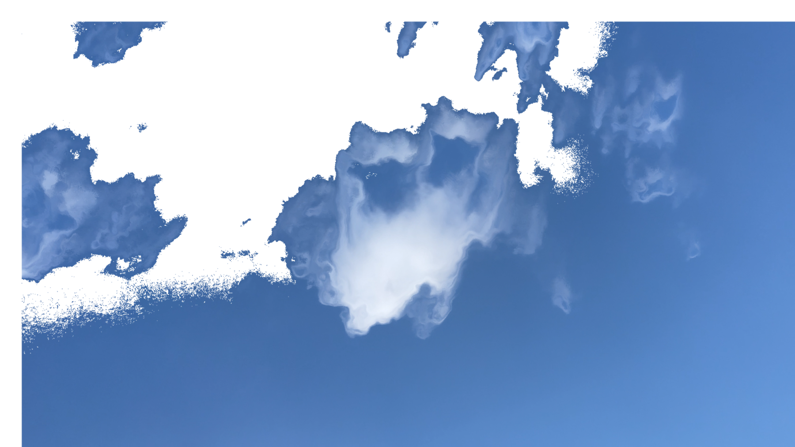
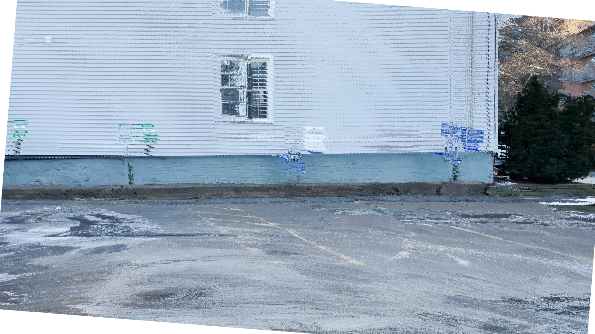
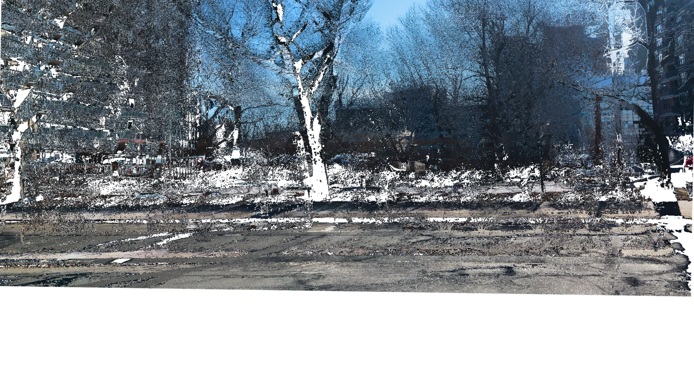

From the feeling of walking along a curb, she learned the word balance,
which she defined as a process by which the body perceives and adapts to
the environment. It is continuous and dynamic, she added.
Unlike
subway or bus, whose stops and starts force her to be carried along with
the crowd now and then, she has found in cycling a certain amount of
freedom. A moment of self-awareness and self-control.
Physical
balance is always reached by the simultaneous presence of action and
reaction. But what about non-physical balance? How to balance loss?
Melancholy? Regret? Longing?
She said that every act and
thought is actually a process of balancing. She likes to add “ing” to
the word balance when using it, thinking of it as something lying beyond
the boundaries of time. Perhaps it is because the state of being
balanced is too fragile, or perhaps it is because balancing happens
everywhere, everywhen.